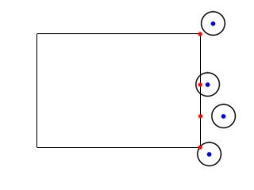

Circular Collision Detection

Last Updated 7/12/14
Along with collision boxes, circles are the most common form of collider. Here we'll be checking collision between two circles and a circle and a box.
Checking collision between two circles is easy. All you have to do is
check whether the distance between the center of each circle is less
than the sum of their radii (radii is the
plural for radius).
For box/circle collision, you have to find the point on the collision box that is closest to the center of the circle. If that point is less than the radius of the circle, there is a collision.
For box/circle collision, you have to find the point on the collision box that is closest to the center of the circle. If that point is less than the radius of the circle, there is a collision.
//A circle stucture
struct Circle
{
int x, y;
int r;
};
SDL has a built in rectangle structure, but we have to make our own circle structure with a position and radius.
//The dot that will move around on the screen
class Dot
{
public:
//The dimensions of the dot
static const int DOT_WIDTH = 20;
static const int DOT_HEIGHT = 20;
//Maximum axis velocity of the dot
static const int DOT_VEL = 1;
//Initializes the variables
Dot( int x, int y );
//Takes key presses and adjusts the dot's velocity
void handleEvent( SDL_Event& e );
//Moves the dot and checks collision
void move( SDL_Rect& square, Circle& circle );
//Shows the dot on the screen
void render();
//Gets collision circle
Circle& getCollider();
private:
//The X and Y offsets of the dot
int mPosX, mPosY;
//The velocity of the dot
int mVelX, mVelY;
//Dot's collision circle
Circle mCollider;
//Moves the collision circle relative to the dot's offset
void shiftColliders();
};
Here is the dot class from previous collision detection tutorials
with some more additons. The move function takes
in a circle and a rectangle to check collision against when moving. We
also now have a circle collider instead of a rectangle collider.
//Circle/Circle collision detector
bool checkCollision( Circle& a, Circle& b );
//Circle/Box collision detector
bool checkCollision( Circle& a, SDL_Rect& b );
//Calculates distance squared between two points
double distanceSquared( int x1, int y1, int x2, int y2 );
For this tutorial we have our collision detection
functions for circle/circle and circle/rectangle collisions. We also
have a function that calculates the distance between two points
squared.
Using the distance squared instead of the distance is an optimization we'll go into more detail later.
Using the distance squared instead of the distance is an optimization we'll go into more detail later.
Dot::Dot( int x, int y )
{
//Initialize the offsets
mPosX = x;
mPosY = y;
//Set collision circle size
mCollider.r = DOT_WIDTH / 2;
//Initialize the velocity
mVelX = 0;
mVelY = 0;
//Move collider relative to the circle
shiftColliders();
}
The constructor takes in a position and initializes the colliders and velocity.
void Dot::move( SDL_Rect& square, Circle&
circle )
{ //Move the dot left or right mPosX += mVelX; shiftColliders(); //If
the dot collided or went too far to the left or right if( ( mPosX -
mCollider.r < 0 ) || ( mPosX + mCollider.r > SCREEN_WIDTH ) ||
checkCollision( mCollider, square ) || checkCollision( mCollider,
circle ) ) { //Move back mPosX -= mVelX; shiftColliders(); } //Move the
dot up or down mPosY += mVelY; shiftColliders(); //If the dot collided
or went too far up or down if( ( mPosY - mCollider.r < 0 ) || (
mPosY + mCollider.r > SCREEN_HEIGHT ) || checkCollision( mCollider,
square ) || checkCollision( mCollider, circle ) ) { //Move back mPosY
-= mVelY; shiftColliders(); }
}
Like in previous collision detection tutorials,
we move along the x axis, check collision against the
edges of the screen, and check against the other scene objects. If the
dot hit something we move back. As always, whenever the dot moves its
colliders move with it.
Then we do this again for the y axis.
Then we do this again for the y axis.
void Dot::render()
{
//Show the dot
gDotTexture.render( mPosX - mCollider.r, mPosY - mCollider.r );
}
The rendering code is a little different. SDL_Rects have their position
at the top left where our circle structure has the position at the
center. This means we need to offset the
render position to the top left of the circle by subtracting the radius
from the x and y position.
bool checkCollision( Circle& a, Circle& b )
{
//Calculate total radius squared
int totalRadiusSquared = a.r + b.r;
totalRadiusSquared = totalRadiusSquared * totalRadiusSquared;
//If the distance between the centers of the circles is less than the sum of their radii
if( distanceSquared( a.x, a.y, b.x, b.y ) < ( totalRadiusSquared ) )
{
//The circles have collided
return true;
}
//If not
return false;
}
Here is our circle to circle collision detector.
It simply checks if the distance squared between the centers is less
than the sum of the radii squared. If it is, there is a
collison.
Why are we using the distance squared as opposed to the plain distance? Because to calculate the distance involves a square root and calculating a square root is a relatively expensive operation. Fortunately if x > y then x^2 > y^2, so we can save a square root operation by just comparing the distance squared.
Why are we using the distance squared as opposed to the plain distance? Because to calculate the distance involves a square root and calculating a square root is a relatively expensive operation. Fortunately if x > y then x^2 > y^2, so we can save a square root operation by just comparing the distance squared.
bool checkCollision( Circle& a, SDL_Rect& b )
{
//Closest point on collision box
int cX, cY;
//Find closest x offset
if( a.x < b.x )
{
cX = b.x;
}
else if( a.x > b.x + b.w )
{
cX = b.x + b.w;
}
else
{
cX = a.x;
}
To check if a box and circle collided we need to find the closest point on the box.
If the circle's center is to the left of the box, the x position of the closest point is on the left side of the box.
If the circle's center is to the right of the box, the x position of the closest point is on the right side of the box.
If the circle's center is inside of the box, the x position of the closest point is the same as the x position of the circle.
If the circle's center is to the left of the box, the x position of the closest point is on the left side of the box.
If the circle's center is to the right of the box, the x position of the closest point is on the right side of the box.

If the circle's center is inside of the box, the x position of the closest point is the same as the x position of the circle.
//Find closest y offset
if( a.y < b.y )
{
cY = b.y;
}
else if( a.y > b.y + b.h )
{
cY = b.y + b.h;
}
else
{
cY = a.y;
}
//If the closest point is inside the circle
if( distanceSquared( a.x, a.y, cX, cY ) < a.r * a.r )
{
//This box and the circle have collided
return true;
}
//If the shapes have not collided
return false;
}
Here we find the closest y position much like we
did the x position. If the distance squared between the closest point
on the box and the center of the circle is less than the
circle's radius squared, then there is a collision.
double distanceSquared( int x1, int y1, int x2, int y2 )
{
int deltaX = x2 - x1;
int deltaY = y2 - y1;
return deltaX*deltaX + deltaY*deltaY;
}
Here is the distance squared function. It's just a distance calculation ( squareRoot( x^2 + y^2 ) ) without the square root.
//The dot that will be moving around on the screen
Dot dot( Dot::DOT_WIDTH / 2, Dot::DOT_HEIGHT / 2 );
Dot otherDot( SCREEN_WIDTH / 4, SCREEN_HEIGHT / 4 );
//Set the wall
SDL_Rect wall;
wall.x = 300;
wall.y = 40;
wall.w = 40;
wall.h = 400;
Before we enter the main loop we define the scene objects.
//While application is running
while( !quit )
{
//Handle events on queue
while( SDL_PollEvent( &e ) != 0 )
{
//User requests quit
if( e.type == SDL_QUIT )
{
quit = true;
}
//Handle input for the dot
dot.handleEvent( e );
}
//Move the dot and check collision
dot.move( wall, otherDot.getCollider() );
//Clear screen
SDL_SetRenderDrawColor( gRenderer, 0xFF, 0xFF, 0xFF, 0xFF );
SDL_RenderClear( gRenderer );
//Render wall
SDL_SetRenderDrawColor( gRenderer, 0x00, 0x00, 0x00, 0xFF );
SDL_RenderDrawRect( gRenderer, &wall );
//Render dots
dot.render();
otherDot.render();
//Update screen
SDL_RenderPresent( gRenderer );
}
Finally in our main loop we handle input, move the dot with collision check and render the scene objects to the screen.